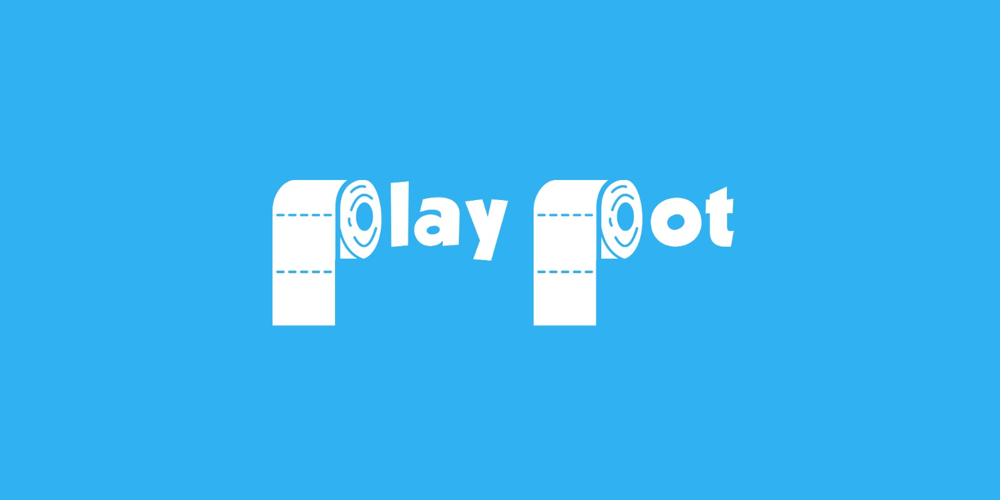
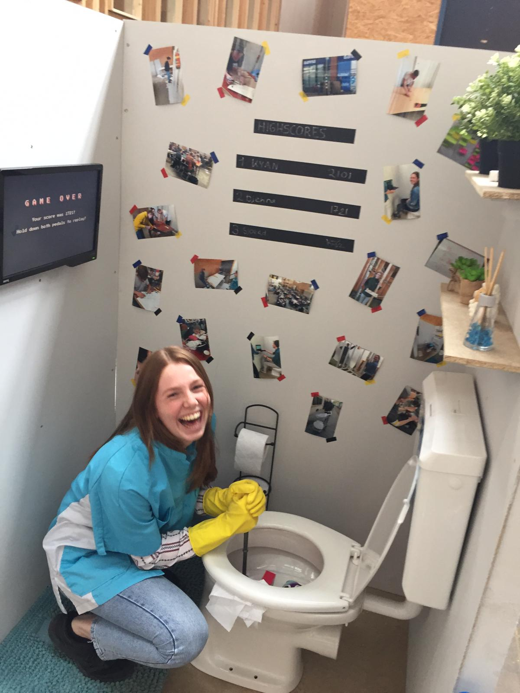
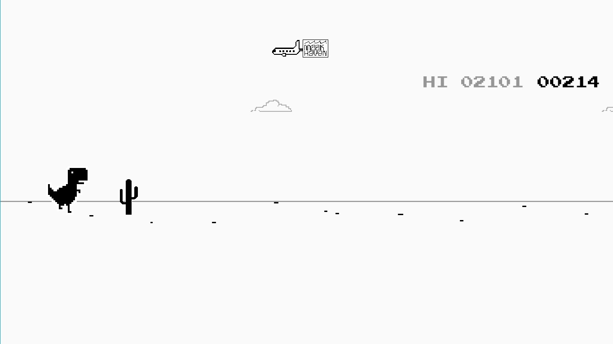
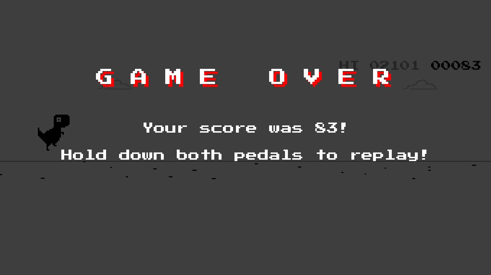
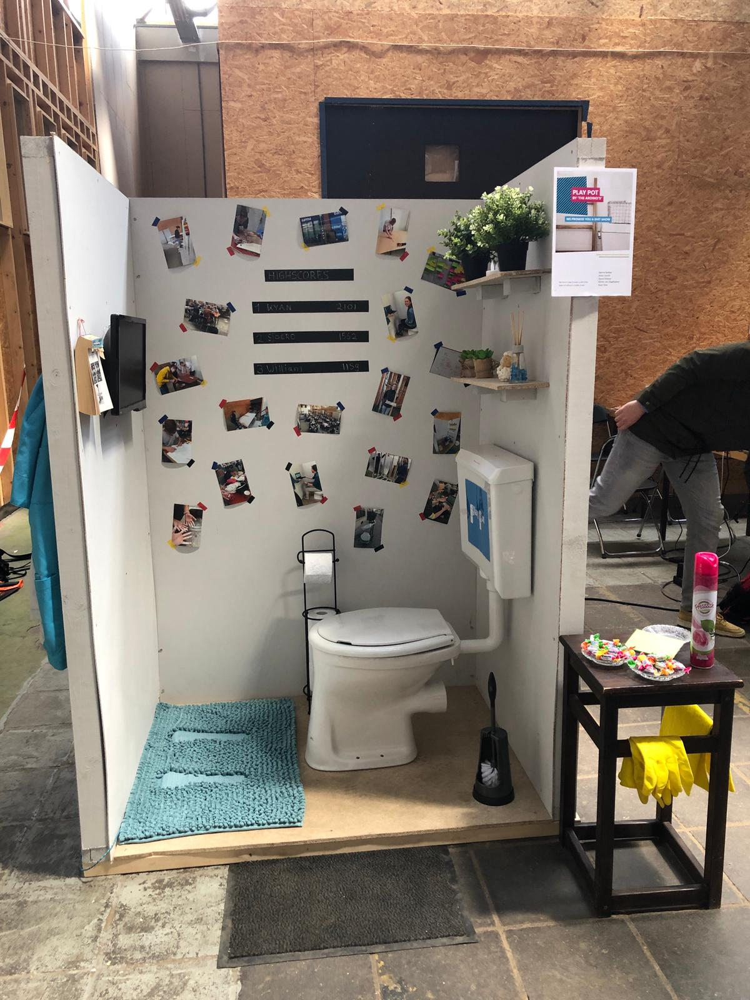
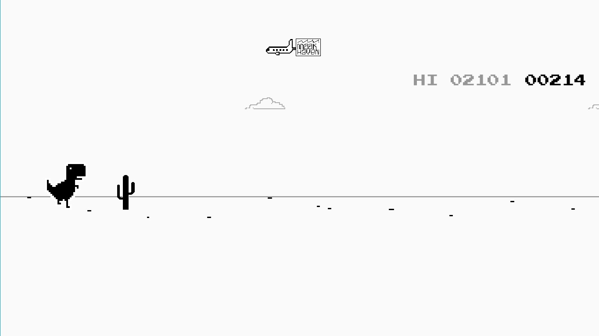
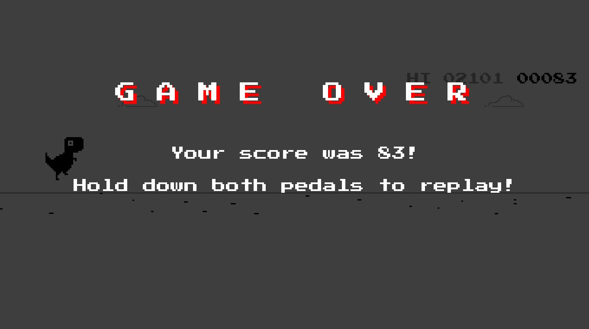
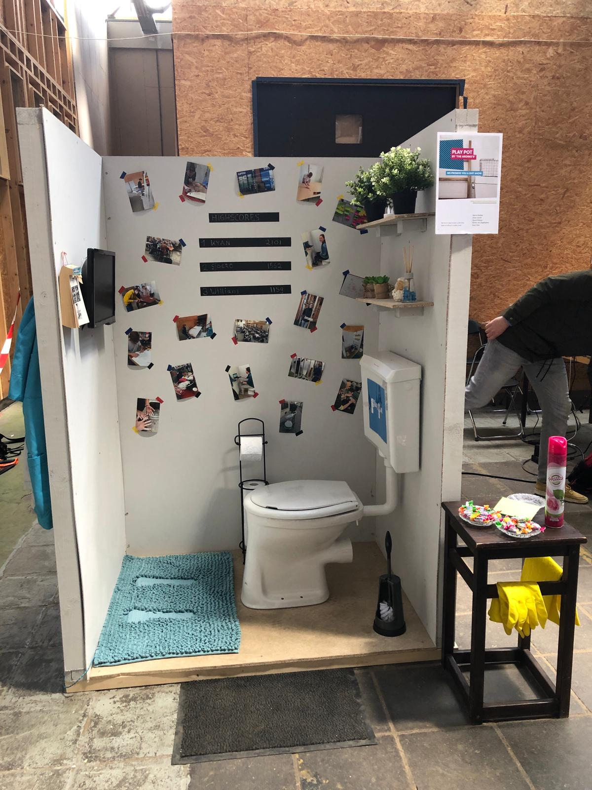

Labweken Product
Play Pot
Onze installatie van de HCI-expositie was een interactieve WC. De play-pot was een plek waar je naar de WC kon en je ook kon vermaken zonder telefoon of internet, met een klassiek spelletje. Doelloos op je telefoon scroller door Instagram, Facebook, of Reddit? Dat is nu verleden tijd met de Play-Pot. Ga lekker zitten, kijk voor je uit, en gebruik je voeten om een nieuwe high-score neer te zetten. Via 2 pedalen op de grond (op een zachte wc-mat) kun je je goed vermaken en zit je nóg langer op de WC.
 Foto gemaakt door MirtheAlles zit aan elkaar verbonden via een laptop. De footcontroller bestaat uit 2 mechanische pedalen met veren aan de onderkant die drukken op een SPST knop. Deze wordt via Arduino geregistreerd als AAN of UIT. Dit wordt 60x per seconde gecheckt en gestuurd naar Processing. In processing leeft het hele programma, dat ik volledig geprogrammeerd heb.
 


Foto gemaakt door Djenna



Foto gemaakt door Djenna